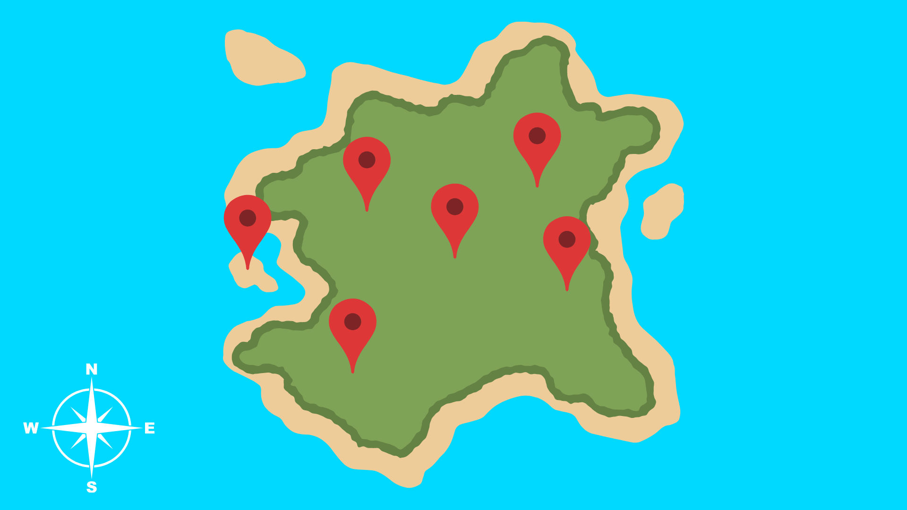

About our Island
Taniti is a small, tropical island in the Pacific. While the island has an area of less than 500 square miles, the terrain is varied and includes both sandy and rocky beaches, a small but safe harbor, lush tropical rainforests, and a mountainous interior that includes a small, active volcano. Taniti has an indigenous population of about 20,000. Until a recent increase in tourism, most the Tanitian economy was dominated by fishing or agriculture.
